Хидраулични цилиндар - прорачун
површина чела клипа: 0.031415927 
14960564.65 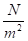

јединица за притисак је Pascal (), тј.
користи се јединица за притисак (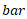), тј.
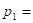 149.6056465 , тј. 150
површина са стране клипњаче: 0.023561945
14005634.99
140.0563499 , тј. 140
морамо претворити јединицу за проток: 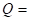 24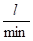
може се усвојити да је: 1
где важи да је: 10
тј: 1000 па је проток:
1000
 6000
6000
Због губитака услед трења и локалних губитака при струјању, стварна снага се мора увећати за вредност укупног степена искоришћења:
по услову задатка је дефинисан максималан пробни притисак: 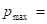 250 , па из Т 8.3, стр 9 копије које је професор дао на часу добијамо да је за задани маскимални притисак најподеснија зупчаста пумпа прецизне израде:
чији је укупни степен корисности:
η= 0.95 усвојено
Можемо израчунати потребну стварну снагу у цилиндру:
6315.789474 = 6.315789474 
Узимајући и губитке приликом струјања у цевоводу, притисак који треба да да пумпа износи:
173.6842105 губици увећани за 10%.
према укупном притиску усваја се пумпни агрегат ПП Трстеник, Т 8.15 зупчаста пумпа:
величина III,
специфичан проток: 16.66
номиналне брзине  1500
1500
која остварује проток: 24.99
што задовољава по услову задатка: 24
номиналне снаге: 8.3
масе: 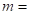 3.7 
са стране 2, копије које је професор дао усваја се кинематска вискозност за усвојену пумпу:

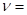 40 до 80 ( оптимална вискозност уља )
Т. 19.2.2 стр 5 копија, радно подручје вискозности:
20 до 300
с обзиром на напомену стр 8, копије: за притиске до 250 усваја се уље квалитета HL, а за средњеевропске услове класе 22, тј HL 22, чија је вискозност на 40 ° C
22 ( прво сам радио са 32, па онда са 22, размишљај )!
а дефинисано радно подручје температуре уља према Сл.2 стр 6 и 7 копија, Т.19.2.2 стр 5:
што задовољава услов задатка: -20° C до 60° C
0.013257607 
време извлачења клипа: 192.3424074 тј: 3.21
брзина увлачења клипа: 0.017676809
време увлачења клипа: 144.2568055 тј: 2.4
претпоставља се брзина струјања флуида у разводном цевоводу: 1.5 (од 0.7 до 1.8 )
из једначине континуитета - једнакости протока у разводном цевоводу и на месту улаза у цилиндар имамо: tj. можемо одредити површину попречног пресека разводног цевовода:
0.0002777 одакле се рачуна пречник разводног цевовода:
0.018802558 тј. 18.80255781 
усваја се стандардни пречник разводног цевовода и одговарајући прикључак на цилиндру: 20
усвајамо и за повратни цевовод исти пречник цеви тј: 20
Дебљина зида цилиндра израчунава се по обрасцу, биће објашњено на предавањима: 22.80840336
усваја се: 23
250 највиши притисак који се остварује у раду ( пробни )
357 меродавна карактеристика материјала - дозвољени напон затезања
 420 критични напон за радне услове, за температуре до 400 ° C за Č.1530
420 критични напон за радне услове, за температуре до 400 ° C за Č.1530

Коефицијент врсте и квалитета завареног шава:
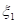= 0.95 до 1 за прву класу квалитета
= 0.8 до 0.95 за другу класу квалитета
= 0.7 до 0.8 за трећу класу квалитета
= 0.6 до 0.7 за четврту класу квалитета
по услову задатка задана друга класа квалитета, усвајам: = 0.85
степен сигурности за челике: 1.5

 3
3
Додатак дебљини зида цеви или суда, зависно од очекиване корозије: 1 до 3 , усвајам 1.8
Дебљина зида за равно дно:
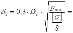 27.50095
усваја се: 28
један крај укљештен а други зглонно везан Сл. 8.26 стр 13 копије, слободна дужина извијања износи:
2000,81
2000,81
2830 ( узета у обзир конструктивна величина, ушице )
Момент инерције попречног пресека клипњаче:
4.90874E-06
Површина попречног пресека клипњаче:
0.007853982
Коефицијент извијања - виткост:
80.0324
гранична виткост за Č.1530: 89
како је за критичан напон је меродавна Тет - Мајерова једначина:
285.379912 
критична сила: 2241368.588 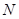
2241.368588 
Провера степена сигурности на извијање:
4.768869335
Степен сигурности задовољава: 4